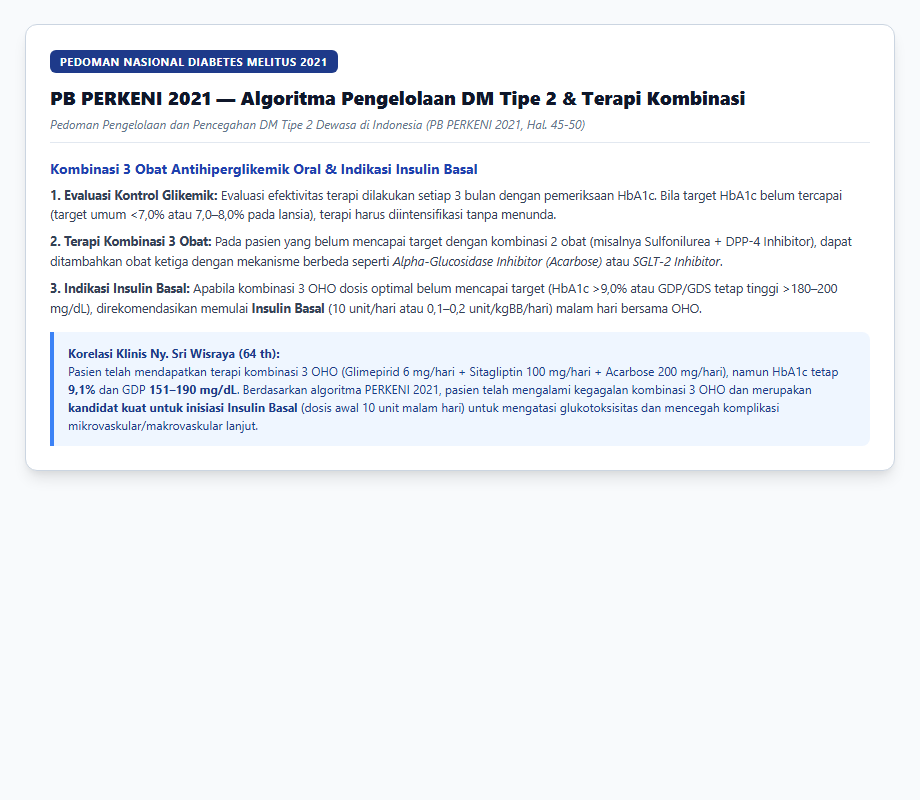
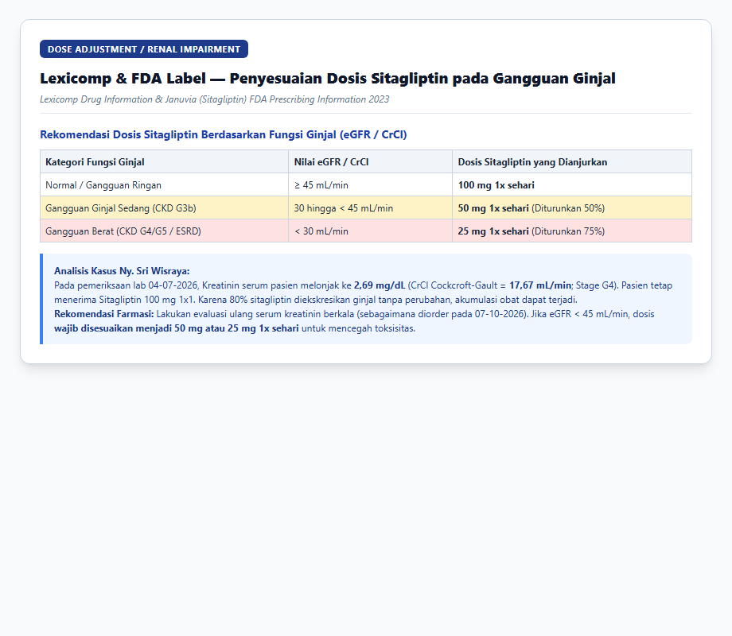

LAPORAN LENGKAP ASUHAN KEFARMASIAN & PEMANTAUAN TERAPI OBAT (PTO) PASIEN RAWAT JALAN
POLI PENYAKIT DALAM — RSPAU DR. S. HARDJOLUKITO YOGYAKARTA
EVALUASI KLINIS 6 BULAN (APRIL 2026 – OKTOBER 2026)
1. IDENTITAS & PROFIL KLINIS PASIEN
| Parameter Data Pasien | Nilai / Keterangan Rekam Medis |
|---|---|
| Nama Pasien | Ny. Sri Wisraya |
| Nomor Rekam Medis (No. RM) | 00062584 |
| Tanggal Lahir / Usia | 28 September 1962 / 64 Tahun 1 Bulan |
| Jenis Kelamin / Gol. Darah | Perempuan / Golongan Darah O |
| Alamat Pasien | Maguwo RT 18 Wonocatur, Banguntapan, Bantul, D.I. Yogyakarta |
| Status Jaminan / Cara Bayar | JKN Non PBI (BPJS Kesehatan) |
| Poli Utama & DPJP | Poli Penyakit Dalam / dr. Tri Hariningsih, Sp.PD |
| Dokter Rawat Bersama (Raber) | 1. Poli Orthopedi: dr. Raden Suhana, Sp.OT (K) 2. Poli Saraf: dr. Wahyu Wihartono, M.Kes., Sp.N, FMIN 3. Poli Mata (Vitreo Retina): dr. Supanji, Sp.M., M.Kes & dr. Shanty Widya Haryati, Sp.M |
| Antropometri & Status Gizi | Berat Badan: 52,0 – 54,0 kg (Rata-rata 53 kg) Tinggi Badan: 156 cm Indeks Massa Tubuh (IMT): 21,37 – 21,78 kg/m² (Status Gizi Ideal / Normoweight) Luas Permukaan Tubuh (LPB): 1,50 – 1,52 m² |
| Riwayat Alergi Obat | Tidak Ada Riwayat Alergi Obat (-) |
| Riwayat Rawat Inap / IGD | 04/07/2026 s.d. 07/07/2026: Rawat IGD & Bangsal akibat Cedera Kepala Ringan (CKR) dan fraktur linier os zygomaticum & frontalis sinistra akibat trauma jatuh. |
| Diagnosa Utama | E11.6 — Non-insulin-dependent diabetes mellitus with other specified complications (DM Tipe 2 Tak Terkontrol) |
| Diagnosa Sekunder 1 | I10 — Essential (primary) hypertension (Hipertensi Esensial) |
| Diagnosa Sekunder 2 | E78.5 — Hyperlipidaemia, unspecified (Dislipidemia / Hiperlipidemia) |
| Diagnosa Sekunder 3 | M17.9 — Gonarthrosis, unspecified (Osteoarthritis / OA Genu Bilateral) |
| Diagnosa Sekunder 4 | E11.5 — Diabetic Neuropathy (Neuropati Perifer Diabetik) |
| Diagnosa Sekunder 5 | H81.4 — Vertigo of central origin (Vertigo Sentral / Pusing Melayang) |
| Komplikasi Spesifik Mata | Rujukan Poliklinik Sub-Divisi Vitreo Retina (evaluasi berkala dugaan Retinopati Diabetik) |
2. ANALISIS MENDALAM KONDISI PASIEN & TREN HASIL LABORATORIUM 6 BULAN
Selama periode observasi 6 bulan (April hingga Oktober 2026), kondisi kesehatan pasien Ny. Sri Wisraya didominasi oleh penyakit metabolik dan degeneratif kronis multisistem yang saling berinteraksi secara patofisiologis:
2.1. Analisis Glukosa Darah & Kegagalan Terapi OHO (Glukotoksisitas)
- Kadar HbA1c (29/05/2026): 9,1% (Nilai normal: 4,0–6,5%; target PERKENI usia lanjut: 7,0–8,0%). Nilai HbA1c 9,1% mencerminkan paparan hiperglikemia berat yang kronis selama 3 bulan sebelumnya.
- Kadar Glukosa Darah Puasa (GDP): Berada pada rentang 151 – 190 mg/dL (Target PERKENI 80–130 mg/dL).
- Kadar Glukosa Darah 2 Jam Postprandial (GD2PP): 211 mg/dL (Target PERKENI < 180 mg/dL).
- Kadar Glukosa Darah Sewaktu (GDS): Sangat fluktuatif (158 mg/dL pada Maret, 252 mg/dL pada Mei, hingga melonjak drastis ke 308 mg/dL pada saat pasien mengalami trauma jatuh pada 05/07/2026).
- Analisis Patofisiologis: Meskipun dokter telah meningkatkan terapi dari 1 macam OHO (Glimepirid 4 mg) menjadi kombinasi 2 OHO (Glimepirid + Sitagliptin pada Mei 2026), menaikkan dosis Glimepirid menjadi 6 mg/hari pada Juni 2026, dan menambahkan OHO ke-3 (Acarbose 100 mg 2x1) pada September 2026, target kontrol glikemik pasien tetap gagal tercapai. Hal ini mengindikasikan adanya secondary sulfonylurea failure akibat deplesi / kelelahan progresif sel beta pankreas (beta-cell burnout) yang lazim terjadi pada perjalanan panjang DM Tipe 2. Pasien membutuhkan suplementasi insulin eksogen (Insulin Basal).

2.2. Analisis Fungsi Ginjal & Episode Penurunan eGFR / Azotemia
- Pada saat masuk IGD akibat trauma jatuh (04/07/2026), hasil laboratorium menunjukkan:
- Ureum: 73 mg/dL (Normal: 21–43 mg/dL) → Azotemia / Retensi Nitrogen
- Kreatinin Serum: 2,69 mg/dL (Normal: 0,6–1,1 mg/dL) → Severe Renal Impairment
- Perhitungan Bersihan Kreatinin (Cockcroft-Gault):
$$\text{CrCl} = \frac{(140 - 64) \times 53}{72 \times 2,69} \times 0,85 = \frac{76 \times 53}{193,68} \times 0,85 = 17,67 \text{ mL/menit}$$
Nilai CrCl 17,67 mL/menit menempatkan pasien pada kategori Stage G4 CKD (Severely Decreased) atau kondisi Acute Kidney Injury (AKI) on CKD. - Faktor Pemicu: Lonjakan kreatinin pada Juli 2026 dipicu oleh kombinasi stres metabolik paska trauma kepala, dehidrasi relatif, nefropati diabetik yang mendasari, serta paparan analgesik NSAID oral (Meloxicam 7,5 mg) yang diresepkan pada kunjungan Mei dan Juni 2026. NSAID menghambat sintesis prostaglandin renal vasodilatasi, memicu iskemia medula ginjal.
- Pada kontrol 07/10/2026, DPJP (dr. Tri Hariningsih) telah menjadwalkan pemeriksaan ulang fungsi ginjal (Kreatinin) dan GDP untuk 06/11/2026. Hal ini sangat krusial untuk menentukan stadium ginjal definitif saat kondisi stabil.
2.3. Analisis Profil Darah Rutin & Anemia Penyakit Kronis
- Hemoglobin (04/07/2026): 10,1 g/dL (Normal wanita: 11,7–15,5 g/dL)
- Hematokrit: 30,0% (Normal: 35–47%)
- Trombosit: 228.000 /mm³ (Normal: 150.000–440.000 /mm³)
- Evaluasi: Pasien mengalami Anemia Ringan (Grade 1) yang konsisten dengan Anemia of Chronic Disease akibat kombinasi nefropati diabetik (penurunan sekresi eritropoietin ginjal) dan inflamasi kronis derajat rendah dari osteoartritis dan diabetes.
2.4. Analisis Tekanan Darah & Monoterapi Hipertensi
- Tren Tekanan Darah (TD):
- 27-04-2026: 130/80 mmHg
- 29-05-2026: 138/76 mmHg
- 29-06-2026: 156/85 mmHg → Hipertensi Derajat 1
- 05-08-2026: 165/89 mmHg → Hipertensi Derajat 2 (Spike tertinggi)
- 07-09-2026: 141/80 mmHg
- 07-10-2026: 133/77 mmHg
- Evaluasi: Target tekanan darah konsensus PERHI 2021 pada pasien DM dan CKD adalah < 130/80 mmHg. Monoterapi Amlodipin 10 mg 1x1 belum adekuat mengontrol tekanan darah sistolik pasien, terutama saat dipicu oleh nyeri sendi lutut hebat dan interaksi farmakodinamik dengan NSAID sistemik.

2.5. Analisis Radiologi, Vertigo, & Risiko Jatuh Geriatri
- Pemeriksaan Foto Pelvis AP (16/05/2026): Kesan Periarticular calcification hip dextra. Mengonfirmasi adanya kalsifikasi periartikular degeneratif kronis yang mendasari keluhan nyeri panggul dan kekakuan muskuloskeletal.
- CT Scan Kepala Non-Kontras (04/07/2026):
- Hematoma jaringan lunak regio zygomaticum kiri hingga frontalis kiri (HU: 69–75).
- Fraktur linier pada os zygomaticum kiri dan os frontalis kiri.
- Hematosinus maksilaris kiri.
- Korelasi Klinis: Pasien mengalami kecelakaan jatuh (fall event) pada awal Juli 2026 yang mengakibatkan CKR dan fraktur wajah. Kejadian jatuh ini adalah komplikasi multifaktorial geriatri akibat:
- Episode hipoglikemia asimtomatik / pusing akibat dosis Glimepirid tinggi (6 mg/hari).
- Vertigo sentral (ngliyer / ketidakseimbangan postural) yang didiagnosis pada September 2026 (ICD H81.4).
- Gangguan proprioseptif akibat neuropati diabetik perifer (kaki kebas dan kaku).
- Kelemahan mekanik sendi akibat Osteoarthritis (OA) Genu Bilateral.
3. PENILAIAN TINGKAT KEPATUHAN PASIEN (MMAS-8)
Berdasarkan instrumen baku Morisky Medication Adherence Scale (MMAS-8) (Morisky DE et al., 2008) yang digunakan dalam standar evaluasi farmasi klinis PKPA RSPAU dr. S. Hardjolukito, evaluasi kepatuhan pasien diuraikan sebagai berikut:
| No | Butir Pertanyaan MMAS-8 | Respon Pasien | Skor | Analisis Kepatuhan & Korelasi Data Rekam Medis |
|---|---|---|---|---|
| 1 | Apakah Anda kadang-kadang lupa minum obat untuk penyakit Anda? | Tidak | 1 | Pasien memiliki riwayat pengambilan obat teratur setiap bulan di apotek rawat jalan. |
| 2 | Orang kadang-kadang tidak sempat minum obat bukan karena lupa. Selama 2 minggu terakhir, pernahkah Anda sengaja tidak minum obat? | Tidak | 1 | Pasien memiliki kesadaran terhadap penyakit komorbidnya (DM, Hipertensi). |
| 3 | Pernahkah Anda dengan sengaja mengurangi atau berhenti minum obat tanpa memberitahu dokter karena Anda merasa kondisi bertambah parah? | Tidak | 1 | Tidak ada catatan penghentian terapi sepihak; kepatuhan kontrol ke poli spesialis tertib. |
| 4 | Ketika Anda bepergian atau meninggalkan rumah, apakah Anda kadang-kadang lupa membawa obat? | Ya | 0 | Titik Lemah Kepatuhan: Pasien mengonsumsi 7–9 jenis obat dengan sediaan berbeda; sangat rentan tertinggal saat bepergian. |
| 5 | Apakah kemarin Anda lupa minum obat? | Tidak | 1 | Obat rutin diminum di rumah dibantu pengingat dari keluarga. |
| 6 | Ketika Anda merasa sehat atau keluhan membaik, apakah Anda kadang berhenti minum obat? | Ya | 0 | Non-adherence Parsial: Pasien menghentikan obat analgetik oral (Meloxicam/Diklofenak) saat nyeri mereda dan hanya meminumnya saat nyeri kambuh kembali. |
| 7 | Minum obat setiap hari adalah hal yang tidak menyenangkan bagi sebagian orang. Apakah Anda pernah merasa terganggu atau repot dengan kewajiban terapi rutin? | Ya | 0 | Pill Burden (Beban Obat Tinggi): Polifarmasi kompleks dengan aturan minum berbeda (sebelum makan, suapan pertama, sesudah makan, malam sebelum tidur) menimbulkan beban psikologis. |
| 8 | Seberapa sering Anda mengalami kesulitan meminum semua obat Anda? A. Tidak pernah/jarang (1); B. Sekali-kali (0,75); C. Kadang-kadang (0,5); D. Sering (0,25); E. Selalu (0) |
C. Kadang-kadang | 0,5 | Pasien mengaku kadang bingung membedakan waktu minum Glimepirid (sebelum makan) vs Acarbose (saat suapan pertama) vs Sitagliptin (sesudah makan siang). |
| TOTAL | TOTAL SKOR KEPATUHAN MMAS-8 PASIEN | — | 5,5 / 8,0 | KATEGORI: KEPATUHAN SEDANG (MEDIUM ADHERENCE) |
Interpretasi Klinis MMAS-8:
- Tingkat Kepatuhan Pasien Ny. Sri Wisraya adalah Sedang (Skor 5,5).
- Skor kepatuhan sedang ini memberikan penjelasan penting mengapa kadar HbA1c pasien tetap tinggi (9,1%): terjadi ketidaktepatan waktu konsumsi obat (unintentional timing non-adherence), khususnya Acarbose yang tidak efektif jika tidak diminum saat suapan pertama, serta kekhawatiran pasien terhadap jumlah obat yang terlalu banyak.
- Rencana Intervensi Apoteker:
- Memberikan Kotak Obat Harian (Pill-Box Organizer) bersekat 4 waktu (Pagi, Siang, Sore, Malam).
- Membuatkan Lembar Jadwal Minum Obat Bergambar yang ditempel di ruang makan.
- Mengedukasi keluarga (family caregiver) sebagai Pengawas Minum Obat (PMO).
4. DAFTAR MASALAH TERKAIT OBAT (DRP), INTERAKSI, & REKOMENDASI GUIDELINE
Matriks Rangkuman Drug Related Problems (DRP)
| No | Kategori DRP | Obat Terlibat | Uraian Masalah Klinis (DRP) | Klasifikasi Guideline | Rekomendasi Terapi Apoteker | Parameter Monitoring & Target |
|---|---|---|---|---|---|---|
| 1 | Dosis Terlalu Tinggi / Geriatric Inappropriate | Glimepirid 3 mg Tab (2x1 = 6 mg/hari) | Dosis total 6 mg/hari pada wanita geriatri (64 th) dengan riwayat kenaikan kreatinin (2,69 mg/dL) sangat berbahaya. Glimepirid memiliki metabolit aktif bersihan ginjal (60%). Berisiko tinggi memicu hipoglikemia berat berkepanjangan dan trauma jatuh (CKR). | PIM (Potentially Inappropriate Medication) — AGS Beers Criteria 2023 & PERKENI 2021 | Turunkan dosis Glimepirid menjadi 2 mg 1x1 pagi hari, atau beralih ke sulfonilurea bersihan hati (Glikuidon 30 mg 2-3x1) atau ganti ke Insulin Basal. | GDS mandiri di rumah, gejala hipoglikemia (keringat dingin, tremor, pusing); target GDP 80–130 mg/dL. |
| 2 | Kegagalan Kombinasi 3 OHO / Indikasi Belum Terpenuhi | Regimen DM (Glimepirid + Sitagliptin + Acarbose) | Pasien mengalami kegagalan terapi kombinasi 3 OHO dosis optimal (HbA1c tetap 9,1%, GDP 151–190 mg/dL). Sel beta pankreas mengalami kegagalan progresif sehingga OHO oral tidak mampu lagi mencapai target kendali metabolik. | Mayor — PB PERKENI 2021 (Hal. 45–50) & ADA Standards of Care 2024 | Inisiasi Insulin Basal (Insulin Glargine / Detemir) dosis awal 10 unit atau 0,1–0,2 U/kgBB (5–10 unit) malam hari menjelang tidur, dikombinasikan dengan OHO. | HbA1c setiap 3 bulan (target 7,0–8,0%), GDP pagi hari (target 80–130 mg/dL). |
| 3 | Penyesuaian Dosis Organ (Gangguan Ginjal) | Sitagliptin 100 mg Tab (1x1) | Sitagliptin diekskresikan ginjal sebesar 80%. Pada 04/07/2026 kadar kreatinin melonjak 2,69 mg/dL (CrCl 17,67 mL/min). Jika eGFR < 45 mL/min, dosis 100 mg menyebabkan akumulasi obat dan risiko toksisitas. | Moderat — Lexicomp & FDA Prescribing Information | Evaluasi hasil lab Kreatinin ulang (jadwal 06/11/2026). Jika eGFR 30–44 mL/min, turunkan dosis menjadi 50 mg 1x1; jika eGFR < 30 mL/min, turunkan menjadi 25 mg 1x1. | Serum kreatinin & eGFR berkala, pemantauan keluhan saluran cerna & enzim pankreas. |
| 4 | Interaksi Obat (Nefrotoksisitas & Antagonisme TD) | NSAID Oral (Meloxicam / Diklofenak) + Amlodipin | NSAID menghambat prostaglandin vasodilator ginjal, mereduksi aliran darah ginjal, retensi natrium/air, dan menumpulkan efikasi antihipertensi Amlodipin (TD melonjak hingga 165/89 mmHg pada 05/08). | Kategori C (Lexicomp) / Nefrotoksik | Hentikan NSAID oral sistemik rutin. Maksimalkan terapi lokal Flamar Gel (Diklofenak Gel 1%) 2–4x sehari pada kedua sendi lutut. Absorpsi sistemik topikal < 6%, aman bagi ginjal & TD. | Tekanan darah berkala (target <130/80 mmHg), fungsi ginjal (Ureum/Kreatinin), edema tungkai. |
| 5 | Interaksi Obat (Peningkatan Hipoglikemia) | NSAID Oral + Glimepirid | NSAID menggeser ikatan protein plasma sulfonilurea dan menghambat eliminasi renalnya, meningkatkan fraksi bebas Glimepirid dan memperparah risiko hipoglikemia akut. | Kategori C (Lexicomp) | Hindari penggunaan bersama; jika membutuhkan analgetik oral saat eksaserbasi akut, gunakan Parasetamol 500–1000 mg prn (maksimal 3000 mg/hari). | Monitoring tanda hipoglikemia, konsumsi karbohidrat teratur sesudah obat. |
| 6 | Interaksi Obat (Sedasi Aditif & Risiko Jatuh) | Gabapentin 100 mg + Flunarizine 5 mg | Kombinasi dua depresan sistem saraf pusat memicu efek aditif rasa kantuk, pusing, gangguan koordinasi motorik, dan kelemahan otot, melipatgandakan risiko jatuh berulang pada geriatri. | Kategori C (Lexicomp) / Fall Risk Alert | Batasi durasi pemberian Flunarizine maksimal 7–10 hari (hanya untuk vertigo akut); konsumsi Gabapentin malam hari sebelum tidur; edukasi pencegahan jatuh di rumah. | Penilaian kesadaran, rasa kantuk siang hari, skrining Morse Fall Scale. |
| 7 | Ketepatan Aturan Pakai Obat (Drug-Food) | Acarbose 100 mg Tab | Acarbose bekerja lokal menghambat enzim alfa-glukosidase di usus halus. Tidak efektif bila diminum sebelum atau sesudah makan. CRITICAL: Jika terjadi hipoglikemia, tidak dapat diatasi dengan gula pasir/sukrosa. | Signifikan (Farmakologi Klinis) | Edukasi pasien: Acarbose WAJIB diminum bersama suapan pertama makan besar. Pasien dan keluarga wajib menyediakan Dextrose / Glukosa murni untuk antidotum hipoglikemia. | Kadar Glukosa Darah 2 Jam PP (target <180 mg/dL), keluhan kembung / flatus. |
| 8 | Sub-optimal Monoterapi Hipertensi | Amlodipin 10 mg Tab | Monoterapi Amlodipin 10 mg belum adekuat mengontrol TD pasien (133–165 mmHg). Berdasarkan PERHI 2021 & KDIGO 2024, pasien DM dengan komorbiditas ginjal membutuhkan kombinasi CCB + ARB. | Mayor — PERHI 2021 & KDIGO 2024 | Rekomendasikan kombinasi lini pertama: Amlodipin 5–10 mg + ARB (Candesartan 8–16 mg atau Telmisartan 40–80 mg). ARB memberikan efek renoprotektif dan mengatasi vasodilatasi perifer Amlodipin. | Tekanan darah (target <130/80 mmHg), kadar kalium serum dan serum kreatinin berkala. |
| 9 | Evaluasi Pemilihan Statin (Kesesuaian Terapi) | Atorvastatin 20 mg Tab vs Rosuvastatin 10 mg Tab | Dokter melakukan penggantian (switch) dari Rosuvastatin 10 mg ke Atorvastatin 20 mg pada resep 07/10/2026. | Kesesuaian Terapi Positif (PERKI 2022) | Penggantian dinilai sangat tepat. Atorvastatin dieliminasi terutama melalui metabolisme hati (<2% diekskresi ginjal), sehingga sangat aman pada pasien dengan riwayat kenaikan kreatinin. | Profil lipid (target LDL-C < 70 mg/dL atau < 55 mg/dL), enzim hati (SGOT/SGPT), keluhan mialgia. |
5. BUKTI SCREENSHOT GUIDELINE RESMI (EVIDENCE-BASED MEDICINE)
Berikut adalah bukti tangkapan layar (screenshots) dari pedoman klinis nasional dan internasional terbaru yang menjadi dasar analisis dan rekomendasi pemantauan terapi obat:
5.1. PB PERKENI 2021 — Algoritma Pengelolaan DM Tipe 2 & Indikasi Insulin Basal
Pedoman Nasional PERKENI 2021 menegaskan bahwa pasien yang tidak mencapai target kendali glikemik dengan kombinasi 3 OHO (atau HbA1c > 9,0%) harus segera diintensifikasi dengan penambahan Insulin Basal (10 unit/hari atau 0,1–0,2 unit/kgBB/hari) malam hari.

5.2. PB PERKENI 2021 & AGS Beers Criteria 2023 — Bahaya Sulfonilurea Dosis Tinggi pada Geriatri
PERKENI 2021 dan American Geriatrics Society (AGS) Beers Criteria 2023 mengklasifikasikan sulfonilurea kerja panjang (Glimepirid) sebagai obat yang harus dihindari dosis tingginya pada lansia karena risiko hipoglikemia berat berkepanjangan yang dapat memicu trauma jatuh dan kematian.

5.3. Lexicomp & FDA Prescribing Information — Penyesuaian Dosis Sitagliptin pada Gangguan Ginjal
Sitagliptin diekskresikan 80% melalui ginjal. Panduan Lexicomp dan label resmi FDA Januvia menetapkan reduksi dosis menjadi 50 mg 1x1 bila eGFR 30–44 mL/min, dan 25 mg 1x1 bila eGFR < 30 mL/min.

5.4. PERHI 2021 & PERKI 2022 — Tata Laksana Terintegrasi Hipertensi & Dislipidemia pada DM Tipe 2
Target tekanan darah PERHI 2021 untuk pasien DM/CKD adalah < 130/80 mmHg dengan kombinasi lini pertama CCB + ARB. Target PERKI 2022 untuk dislipidemia pada pasien risiko sangat tinggi adalah LDL-C < 55 mg/dL (atau < 70 mg/dL risiko tinggi) dengan statin berintensitas sedang-tinggi seperti Atorvastatin 20 mg.

5.5. Rekomendasi IRA 2021 & ACR — Keamanan Analgesik pada Osteoarthritis Genu Geriatri Komorbid Ginjal
Pedoman Indonesian Rheumatology Association (IRA) dan American College of Rheumatology (ACR) merekomendasikan Topical NSAID (Flamar Gel) sebagai lini pertama OA Genu. NSAID oral sistemik harus dihindari pada lansia dengan hipertensi dan insufisiensi ginjal.

5.6. Morisky Medication Adherence Scale (MMAS-8) — Protokol Penilaian Kepatuhan Rawat Jalan
Kuesioner standar 8 pertanyaan untuk mengevaluasi kepatuhan minum obat pasien rawat jalan, mendeteksi hambatan psikologis, beban polifarmasi, dan merumuskan intervensi farmasis.

5.7. Lexicomp Drug Interactions Analysis — Interaksi Farmakologis Resep Pasien
Analisis komprehensif interaksi obat-obat (Meloxicam/Diklofenak + Amlodipin, NSAID + Glimepirid, Gabapentin + Flunarizine) dan interaksi obat-makanan (Acarbose suapan pertama & penyelamatan hipoglikemia dengan Dekstrosa murni).

6. FORMULIR ASUHAN KEFARMASIAN RAWAT JALAN (SOAP)
S — SUBJEKTIF
- Pasien Ny. Sri Wisraya, wanita 64 tahun, datang kontrol rutin ke Poli Penyakit Dalam RSPAU dr. S. Hardjolukito pada 07-10-2026.
- Keluhan Utama: Nyeri sendi lutut kanan dan kiri (OA Genu Bilateral) terutama saat digerakkan atau menumpu beban, kaki kaku dan kebas/kesemutan (neuropati diabetik), serta riwayat sensasi pusing berputar/gliyer (vertigo central origin).
- Riwayat Kejadian Khusus: Pasien memiliki riwayat rawat inap di IGD pada 04-07-2026 akibat cedera kepala ringan (CKR) dan fraktur os zygomaticum linier sinistra akibat kecelakaan jatuh di rumah.
- Riwayat Pengobatan: Rutin meminum obat kronis dari rumah sakit, namun merasa repot dan sedikit terbebani dengan jumlah obat yang banyak (7–9 tablet sehari dengan jadwal sebelum makan, saat makan, sesudah makan, dan malam hari).
O — OBJEKTIF
- Tanda-Tanda Vital (07-10-2026):
- Tekanan Darah: 133/77 mmHg (Target PERHI < 130/80 mmHg; tertinggi 165/89 mmHg pada 05/08/2026).
- Nadi: 85 x/menit, Nafas: 20 x/menit, Suhu: 36,0°C, SpO2: 99%.
- BB: 52,0 kg, TB: 156 cm, IMT: 21,37 kg/m² (Normoweight / Status gizi ideal).
- Pemeriksaan Fisik: Nyeri tekan/gerak genu dextra et sinistra (+), krepitasi (+), edema ekstremitas (-), bising jantung (-), suara nafas vesikuler normal.
- Data Laboratorium (Tren 6 Bulan):
- HbA1c (29/05/2026): 9,1% → High (Uncontrolled)
- GDP (07/10/2026): 151 mg/dL (sebelumnya 190 mg/dL pada 07/09 dan 169 mg/dL pada 29/06) → High
- GD2PP (29/06/2026): 211 mg/dL → High
- GDS: Fluktuatif 158–252 mg/dL; melonjak hingga 308 mg/dL saat trauma Juli 2026.
- Fungsi Ginjal (04/07/2026): Ureum 73 mg/dL, Kreatinin 2,69 mg/dL (CrCl Cockcroft-Gault 17,67 mL/min). Order ulang kreatinin dan GDP dijadwalkan pada 06-11-2026.
- Darah Rutin (04/07/2026): Hb 10,1 g/dL, Ht 30,0%, Trombosit 228.000 /mm³.
- Fungsi Hati (04/07/2026): SGOT 29 U/L, SGPT 20 U/L (Dalam batas normal).
- Radiologi:
- Foto Pelvis AP (16/05/2026): Periarticular calcification hip dextra.
- CT Scan Kepala (04/07/2026): Hematoma regio zygomaticum-frontalis kiri, fraktur linier os zygomaticum & frontalis kiri, hematosinus maksilaris kiri.
- Kepatuhan (MMAS-8): Skor 5,5 / 8,0 (Kepatuhan Sedang / Medium Adherence).
A — ASESMEN KEFARMASIAN
- DM Tipe 2 Tidak Terkontrol (HbA1c 9,1%, GDP 151–190 mg/dL): Terjadi kegagalan terapi kombinasi 3 OHO (Glimepirid 6 mg + Sitagliptin 100 mg + Acarbose 200 mg). Pasien memenuhi kriteria indikasi inisiasi Insulin Basal sesuai algoritma PB PERKENI 2021.
- Dosis Berlebih Relatif Glimepirid pada Geriatri (6 mg/hari): Penggunaan dosis 3 mg 2x1 pada wanita usia 64 tahun dengan riwayat insufisiensi ginjal sangat berisiko memicu hipoglikemia asimtomatik berkepanjangan yang berpotensi menjadi pemicu trauma jatuh pasien (CKR pada 04/07). Termasuk obat PIM menurut AGS Beers Criteria 2023.
- Potensi Toksisitas Sitagliptin pada Gangguan Ginjal: Sitagliptin 100 mg 1x1 belum disesuaikan terhadap fungsi ginjal pasien paska lonjakan kreatinin 2,69 mg/dL. Bila eGFR < 45 mL/min, dosis harus diturunkan menjadi 50 mg atau 25 mg/hari.
- Hipertensi Belum Terkontrol Optimal: Monoterapi Amlodipin 10 mg 1x1 belum mencapai target < 130/80 mmHg dan efikasinya terganggu oleh interaksi farmakodinamik dengan NSAID oral. Sesuai PERHI 2021, direkomendasikan kombinasi CCB + ARB.
- Nefrotoksisitas & Bahaya Penggunaan NSAID Sistemik pada OA Genu: Pemberian Meloxicam dan Kalium/Natrium Diklofenak oral tanpa gastroprotektor membahayakan integritas ginjal, memperburuk hipertensi, dan memicu risiko perdarahan saluran cerna.
- Risiko Jatuh Geriatri (Fall Risk): Interaksi aditif efek depresan SSP antara Gabapentin 100 mg dan Flunarizine 5 mg meningkatkan rasa kantuk, ataxia, dan risiko jatuh berulang.
- Kesesuaian Penggantian Statin: Pengalihan dari Rosuvastatin 10 mg ke Atorvastatin 20 mg pada 07/10/2026 dinilai sangat tepat karena Atorvastatin memiliki eliminasi hepatik murni yang aman bagi ginjal.
P — RENCANA ASUHAN KEFARMASIAN & REKOMENDASI TERAPI
- Rekomendasi Terapi Diabetes (Kolaborasi DPJP dr. Tri Hariningsih, Sp.PD):
- Rekomendasikan inisiasi Insulin Basal (misalnya Insulin Glargine 100 IU/mL) dengan dosis awal 10 Unit sekali sehari pada malam hari (pukul 21.00–22.00) untuk mengatasi glukotoksisitas berat (HbA1c 9,1%).
- Turunkan dosis Glimepirid dari 6 mg/hari (3 mg 2x1) menjadi 2 mg 1x1 pagi hari (atau hentikan jika insulin basal telah dimulai, atau beralih ke Glikuidon 30 mg 2-3x1) untuk mengeliminasi risiko hipoglikemia berat.
- Penyesuaian Dosis Berdasarkan Fungsi Ginjal:
- Evaluasi ketat hasil laboratorium Kreatinin Serum ulang pada jadwal 06-11-2026.
- Jika nilai eGFR berada pada rentang 30–44 mL/menit, sesuaikan dosis Sitagliptin menjadi 50 mg 1x1. Jika eGFR < 30 mL/menit, sesuaikan dosis menjadi 25 mg 1x1.
- Rekomendasi Terapi Hipertensi (PERHI 2021):
- Rekomendasikan terapi kombinasi 2 obat lini pertama: Amlodipin 5–10 mg 1x1 pagi + Candesartan 8–16 mg 1x1 malam (atau Telmisartan 40–80 mg). Terapi ini memberikan perlindungan kardiorenal superior, menurunkan albuminuria, dan meniadakan efek edema tungkai dari Amlodipin.
- Rekomendasi Penanganan Nyeri Sendi (OA Genu):
- Hentikan NSAID oral sistemik (Meloxicam & Kalium/Natrium Diklofenak).
- Optimalkan terapi topikal Flamar Gel (Diklofenak Dietilamin 1%) dioleskan tipis pada sendi lutut kanan dan kiri 2–4 kali sehari.
- Bila pasien mengalami nyeri akut tak tertahankan, berikan analgesik oral lini pertama yang aman bagi ginjal: Parasetamol 500–1000 mg prn (maksimal 3000 mg/hari).
- Lanjutkan suplementasi Glukosamin 500 mg 1x1.
- Rekomendasi Keamanan Neurologi & Pencegahan Jatuh:
- Batasi durasi konsumsi Flunarizine 5 mg maksimal 7–10 hari saja (hanya sampai gejala vertigo akut teratasi), hindari penggunaan jangka panjang pada lansia untuk mencegah efek samping ekstrapiramidal/depresi.
- Jadwalkan minum Gabapentin 100 mg khusus pada malam hari sebelum tidur untuk meminimalkan rasa pusing dan sedasi di siang hari.
- Konseling, Informasi, & Edukasi (KIE) Pasien & Keluarga:
- Aturan Minum Acarbose: Jelaskan kepada pasien bahwa tablet Acarbose wajib dikunyah bersama suapan pertama makan besar (pagi dan sore).
- Protokol Penyelamatan Hipoglikemia: Edukasi pasien dan keluarga bahwa bila muncul tanda hipoglikemia (keringat dingin, berdebar, lemas, pusing), pasien HARUS mengonsumsi Glukosa murni / Dextrose (permen glukosa murni atau air gula pasir dekstrosa), BUKAN gula tebu biasa / sukrosa, karena Acarbose menghambat pemecahan sukrosa di usus.
- Edukasi Pencegahan Jatuh di Rumah: Hindari lantai licin, gunakan alas kaki dengan sol karet antislip, pastikan pencahayaan kamar mandi dan kamar tidur terang benderang, pasang pegangan dinding di kamar mandi, dan jangan berdiri secara mendadak dari posisi tidur/duduk (cegah hipotensi ortostatik).
- Manajemen Kepatuhan: Berikan Pill-Box Organizer 7 Hari 4 Waktu dan lembar jadwal obat untuk menaikkan skor kepatuhan MMAS-8 pasien dari 5,5 menjadi 8,0 (Kepatuhan Tinggi).
7. FILE DELIVERABLES & INTEGRASI WORKSPACE
Seluruh data, analisis mendalam, formulir PTO rawat jalan, dan bukti guideline telah disimpan dan dapat diakses pada tautan file berikut:
- Workbook Excel Lengkap Terisi (6 Bulan):
PTO_RAJAL_LENGKAP_SRI_WISRAYA.xlsxPTO RAJAL/PTO_RAJAL_LENGKAP_SRI_WISRAYA.xlsx- Laporan Asuhan Kefarmasian (Markdown):
LAPORAN_PEMANTAUAN_TERAPI_OBAT_SRI_WISRAYA.md- Laporan Interaktif & Siap Cetak (HTML & PDF):
LAPORAN_PEMANTAUAN_TERAPI_OBAT_SRI_WISRAYA.htmlLAPORAN_PEMANTAUAN_TERAPI_OBAT_SRI_WISRAYA.pdf- Folder Bukti Tangkapan Layar Guideline (Screenshots):
guideline_evidence_rajal/